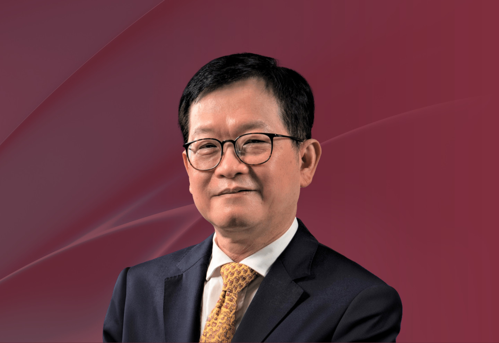

成員
莫毅明教授
香港大學
數學系謝仕榮衛碧堅基金數學教授暨
數學系講座教授及
數學研究所所長
數學系謝仕榮衛碧堅基金數學教授暨
數學系講座教授及
數學研究所所長

過往任期：
2026 年
2027 年
2025 年
2024 年
2023 年
莫教授是世界著名的數學家，致力於解決複界面的分析、微分幾何、代數幾何和數論等問題。他曾擔任「數學發明」編輯委員(2002-2014)，他自1992年起任「數學年鑒」編輯委員 (1992-2024)。
莫教授是中國科學院、香港科學院及美國數學學會院士。莫教授的傑出成就為他贏得了多項國際殊榮，包括美國斯隆研究基金、美國總統年青研究人員獎、香港裘槎優秀科研者獎、中國國家自然科學獎二等獎和美國數學會伯格曼獎。莫教授於2022年榮獲未來科學大獎數學與計算機科學獎、中國科學院陳嘉庚數理科學獎及第九屆世界華人數學家大會陳省身獎, 2023年獲國際基礎科學大會（ICBS）前沿科學獎。
莫教授分別於 2006 年及 2014 年的國際數學家大會中擔任「代數幾何與複幾何」小組和「分析及其應用」小組的核心選委。他於 2010年獲委任為國際數學家大會菲爾茲獎選委。他於 1994 年獲邀在蘇黎世國際數學家大會「實分析與複分析」分組中作學術演講，並擔任 2026 年費城國際數學家大會全體大會發言人。
(註：所有中文譯本，皆以英文本為準)